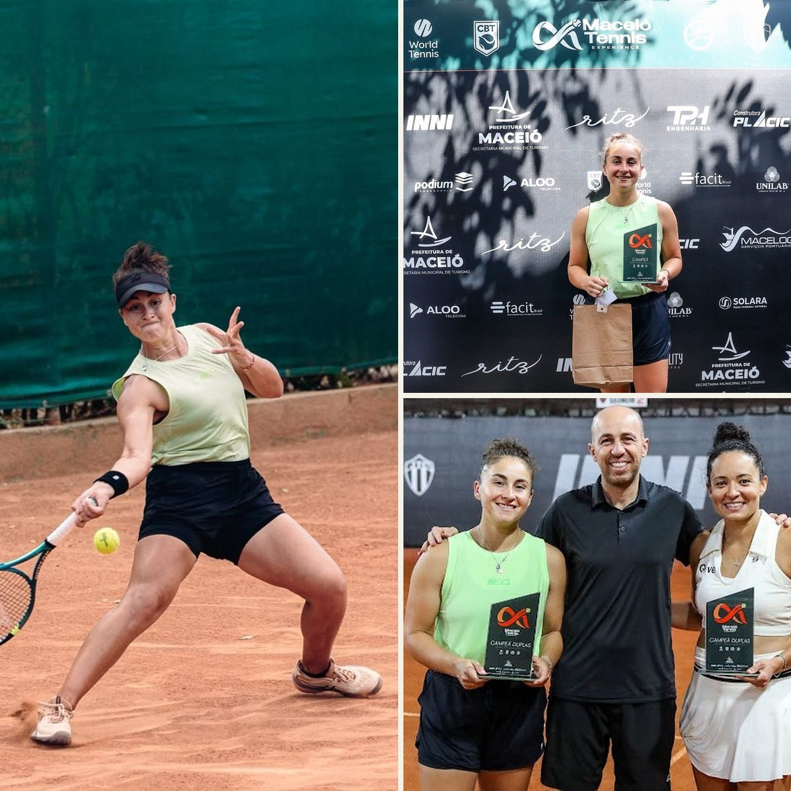
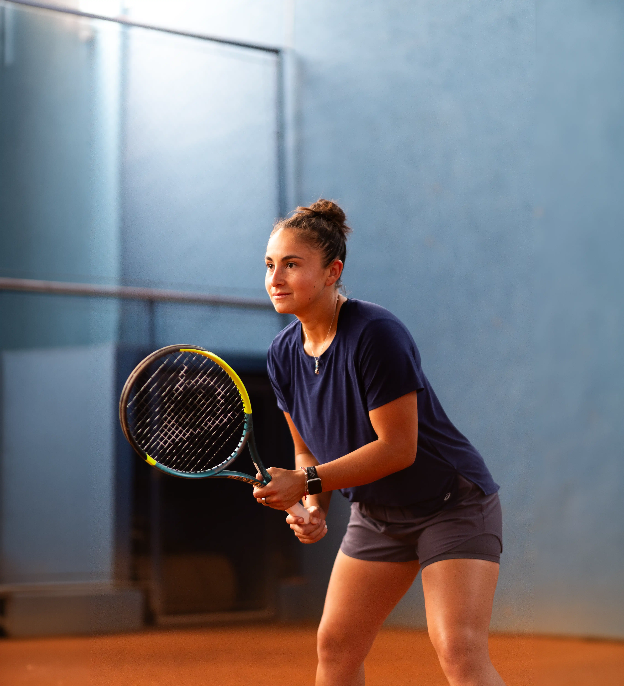
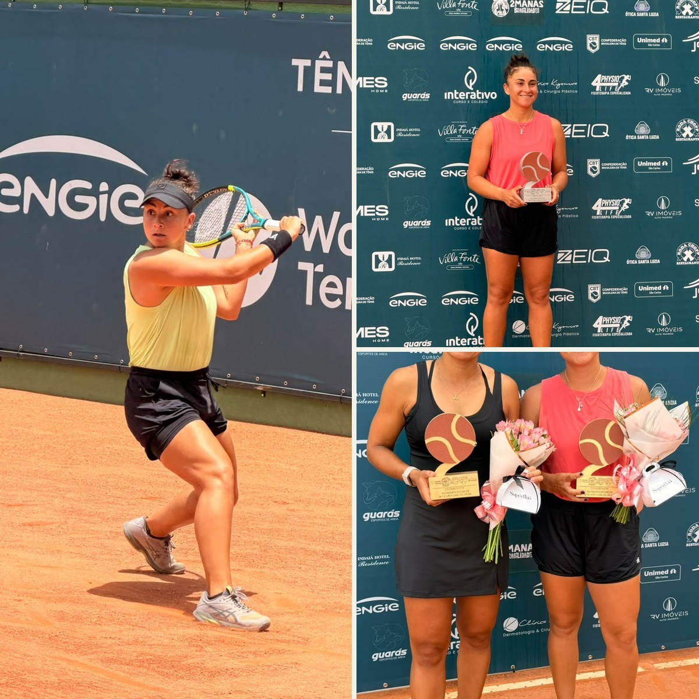

MACEIÓ 2026
CAMPEONA DE INDIVIDUALES Y DOBLES

Fotografía de canchaBACK TO THE TOUR | 2026
Después de cuatro años fuera de la competición, Bárbara Gatica regresó al circuito profesional conquistando los títulos de individuales y dobles en Maceió. En São Carlos, fue campeona de dobles y finalista de individuales. Con tres títulos y cuatro finales desde su regreso, sigue reconstruyendo su trayectoria en el tenis mundial.
TEMPORADA 2026 · EL REGRESO AL CIRCUITO
Después de cuatro años fuera de la competición, Bárbara regresó al circuito profesional conquistando los títulos de individuales y dobles en Maceió. En São Carlos, fue campeona de dobles y finalista de individuales. Dos torneos, tres títulos y cuatro finales disputadas.
Pero más que volver a competir, se trata de construir lo que viene.

CAMPEONA DE INDIVIDUALES Y DOBLES

CAMPEONA DE DOBLES Y FINALISTA DE INDIVIDUALES
Títulos y resultados que marcan la trayectoria de Bárbara en el circuito internacional.
En ocho minutos, Bárbara Gatica habla de su trayectoria en el tenis, los desafíos que enfrentó, sus miedos, sus metas y lo que la motivó a volver a competir.
«Dije que iba a guardar mi sueño en una cajita y, cuando terminara la suspensión, la abriría para volver a buscar esos sueños».Barbara Gatica
«Hoy entiendo mejor mis decisiones, mis responsabilidades y la persona que quiero ser. Creo que eso también se reflejará en la cancha».
Habilitada para competir oficialmente.
Campeona de individuales
Campeona de dobles, junto a Rebeca Pereira
Semifinalista de individuales
Finalista de individuales · Campeona de dobles con Rebeca Pereira
Reconstruir mi ranking y consolidar mi regreso al circuito internacional.
Marcas que forman parte de esta nueva etapa y acompañan a Bárbara dentro y fuera de la cancha.
El regreso ya comenzó con títulos. Ahora el objetivo es dar continuidad a la carrera, disputar los próximos torneos y preparar la temporada 2027.
De vuelta en el circuito profesional, Bárbara Gatica también protagoniza un nuevo capítulo. Su regreso y sus conquistas siguen generando entrevistas y noticias.